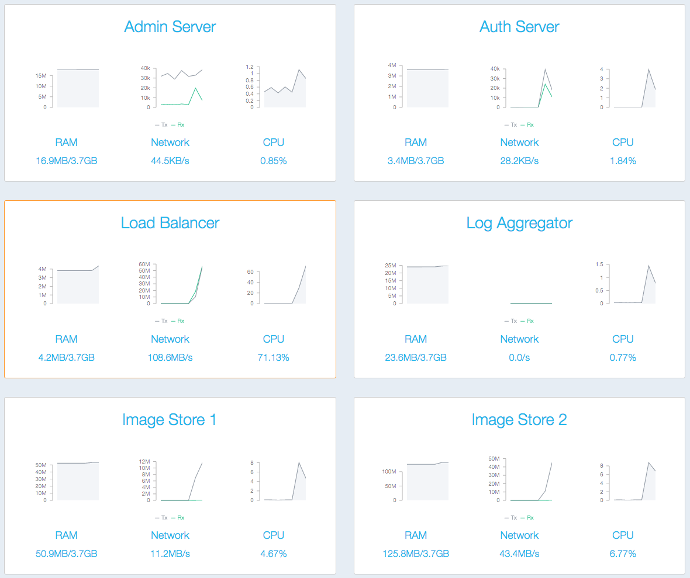

Docker Trusted Registry Quick Start guide: Basic User Workflow
Overview
This Quick Start Guide gives you a hands-on look at the basics of using
Docker Trusted Registry, Docker’s on-premise image storage application.
This guide will walk you through using Docker Trusted Registry to complete a typical, and critical,
part of building a development pipeline: setting up a Jenkins instance. Once you
complete the task, you should have a good idea of how Docker Trusted Registry works and how it might
be useful to you.
Specifically, this guide demonstrates the process of retrieving the
official Docker image for Jenkins,
customizing it to suit your needs, and then hosting it on your private instance
of Docker Trusted Registry located inside your enterprise’s firewalled environment. Your developers
will then be able to retrieve the custom Jenkins image in order to use it to
build CI/CD infrastructure for their projects, no matter the platform they’re
working from, be it a laptop, a VM, or a cloud provider.
You will perform the following steps:
- Pulling the official Jenkins image from the public Docker Hub
- Customizing the Jenkins image to suit your needs
- Pushing the customized image to Docker Trusted Registry
- Pulling the customized image from Docker Trusted Registry
- Launching a container from the custom image
- Using the new Jenkins container
You should be able to complete this guide in about thirty minutes.
Note: This guide assumes you have installed a working instance of Docker Trusted Registry
reachable at dtr.yourdomain.com. If you need help installing and configuring
Docker Trusted Registry, please consult the
installation instructions.
Pulling the official Jenkins image
Note: This guide assumes you are familiar with basic Docker concepts such
as images, containers, and registries. If you need to learn more about Docker
fundamentals, please consult the
Docker user guide.
First, you will retrieve a copy of the official Jenkins image from the Docker Hub. By default, if
Docker can’t find an image locally, it will attempt to pull the image from the
Docker Hub. From the CLI of a machine running the Docker Engine on your network, use
the
docker pull
command to pull the public Jenkins image.
$ docker pull jenkins
Note: This guide assumes you can run Docker commands from a machine where
you are a member of the docker group or have root privileges. Otherwise, you
may need to add sudo to the example commands below.
Docker will start the process of pulling the image from the Hub. Once it has completed, the Jenkins image should be visible in the output of a docker images command, which lists your available images:
$ docker images
REPOSITORY TAG IMAGE ID CREATED VIRTUAL SIZE
jenkins latest 1a7cc22b0ee9 2 weeks ago 888 MB
Note: Because the pull command did not specify any tags, it will pull
the latest version of the public Jenkins image. If your enterprise environment
requires you to use a specific version, add the tag for the version you need
(e.g., jenkins:1.609.2).
Customizing the Jenkins image
Now that you have a local copy of the Jenkins image, you’ll customize it so that
the containers it builds will integrate with your infrastructure. To do this,
you’ll create a custom Docker image that adds a Jenkins plugin that provides
fine grained user management. You’ll also configure Jenkins to be more secure by
disabling HTTP access and forcing it to use HTTPS.
You’ll do this by using a Dockerfile and the docker build command.
Note: These are obviously just a couple of examples of the many ways you
can modify and configure Jenkins. Feel free to add or substitute whatever
customization is necessary to run Jenkins in your environment.
Creating a build context
In order to add the new plugin and configure HTTPS access to the custom Jenkins
image, you need to:
- Create a text file that defines the new plugin
- Create copies of the private key and certificate
All of the above files need to be in the same directory as the Dockerfile you
will create in the next step.
Create a build directory called build, and change to that new directory:
$ mkdir build && cd build
In this directory, create a new file called plugins and add the following
line:
role-strategy:2.2.0
(The plugin version used above was the latest version at the time of writing.)
- You will also need to make copies of the server’s private key and certificate. Give the copies the following names -
https.key and https.pem.
Note: Because creating new keys varies widely by platform and
implementation, this guide won’t cover key generation. We assume you have
access to existing keys. If you don’t have access, or can’t generate keys
yourself, feel free to skip the steps involving them and HTTPS config. The
guide will still walk you through building a custom Jenkins image and pushing
and pulling that image using Docker Trusted Registry.
Creating a Dockerfile
In the same directory as the plugins file and the private key and certificate,
create a new Dockerfile with the
following contents:
FROM jenkins
#New plugins must be placed in the plugins file
COPY plugins /usr/share/jenkins/plugins
#The plugins.sh script will install new plugins
RUN /usr/local/bin/plugins.sh /usr/share/jenkins/plugins
#Copy private key and cert to image
COPY https.pem /var/lib/jenkins/cert
COPY https.key /var/lib/jenkins/pk
#Configure HTTP off and HTTPS on, using port 1973
ENV JENKINS_OPTS --httpPort=-1 --httpsPort=1973 --httpsCertificate=/var/lib/jenkins/cert --httpsPrivateKey=/var/lib/jenkins/pk
The first COPY instruction in the above will copy the plugins file created
earlier into the /usr/share/jenkins directory within the custom image you are
defining with the Dockerfile.
The RUN instruction will execute the /usr/local/bin/plugins.sh script with
the newly copied plugins file, which will install the listed plugin.
The next two COPY instructions copy the server’s private key and certificate
into the required directories within the new image.
The ENV instruction creates an environment variable called JENKINS_OPT in
the image you are about to create. This environment variable will be present in
any containers launched form the image and contains the required settings to
tell Jenkins to disable HTTP and operate over HTTPS.
Note: You can specify any valid port number as part of the JENKINS_OPT
environment variable declared above. The value 1973 used in the example is
arbitrary.
The Dockerfile, the plugins file, as well as the private key and
certificate, must all be in the same directory because the docker build
command uses the directory that contains the Dockerfile as its “build
context”. Only files contained within that “build context” will be included in
the image being built.
Building your custom image
Now that the Dockerfile, the plugins file, and the files required for HTTPS
operation are created in your current working directory, you can build your
custom image using the
docker build command:
docker build -t dtr.yourdomain.com/ci-infrastructure/jnkns-img .
Note: Don’t miss the period (.) at the end of the command above. This
tells the docker build command to use the current working directory as the
“build context”.
This command will build a new Docker image called jnkns-img which is based on
the public Jenkins image you pulled earlier, but contains all of your
customization.
Please note the use of the -t flag in the docker build command above. The
-t flag lets you tag an image so it can be pushed to a custom repository. In
the example above, the new image is tagged so it can be pushed to the
ci-infrastructure repository within the dtr.yourdomain.com registry (your
local Docker Trusted Registry instance). This will be important when you need to push the
customized image to Docker Trusted Registry later.
A docker images command will now show the custom image alongside the Jenkins
image pulled earlier:
$ docker images
REPOSITORY TAG IMAGE ID CREATED VIRTUAL SIZE
dtr.yourdomain.com/ci-infrastructure/jnkns-img latest fc0ab3008d40 2 minutes ago 888.1 MB
jenkins latest 1a7cc22b0ee9 2 weeks ago 888 MB
Pushing to Docker Trusted Registry
Note: If your Docker Trusted Registry instance has authentication enabled, you will need to
use your command line to docker login <dtr-hostname> (e.g., docker login
dtr.yourdomain.com).
Failures due to unauthenticated docker push and docker pull commands will
look like :
$ docker pull dtr.yourdomain.com/hello-world
Pulling repository dtr.yourdomain.com/hello-world
FATA[0001] Error: image hello-world:latest not found
$ docker push dtr.yourdomain.com/hello-world
The push refers to a repository [dtr.yourdomain.com/hello-world] (len: 1)
e45a5af57b00: Image push failed
FATA[0001] Error pushing to registry: token auth attempt for registry
https://dtr.yourdomain.com/v2/:
https://dtr.yourdomain.com/auth/v2/token/
?scope=repository%3Ahello-world%3Apull%2Cpush&service=dtr.yourdomain.com
request failed with status: 401 Unauthorized
Now that you’ve created the custom image, it can be pushed to Docker Trusted Registry using the
docker push command:
$ docker push dtr.yourdomain.com/ci-infrastructure/jnkns-img
511136ea3c5a: Image successfully pushed
848d84b4b2ab: Image successfully pushed
71d9d77ae89e: Image already exists
<truncated ouput...>
492ed3875e3e: Image successfully pushed
fc0ab3008d40: Image successfully pushed
You can view the traffic throughput from the custom image being pushed, by selecting Network from the Load Balancer tile on the Docker Trusted Registry Dashboard:


Once the image is successfully pushed, it can be downloaded, or pulled, by any
Docker host that has access to Docker Trusted Registry.
Pulling from Docker Trusted Registry
To pull the jnkns-img image from Docker Trusted Registry, run the
docker pull
command from any Docker Host that has access to your Docker Trusted Registry instance:
$ docker pull dtr.yourdomain.com/ci-infrastructure/jnkns-img
latest: Pulling from dtr.yourdomain.com/ci-infrastructure/jnkns-img
511136ea3c5a: Pull complete
848d84b4b2ab: Pull complete
71d9d77ae89e: Pull complete
<truncated ouput...>
492ed3875e3e: Pull complete
fc0ab3008d40: Pull complete
dtr.yourdomain.com/ci-infrastructure/jnkns-img:latest: The image you are pulling has been verified. Important: image verification is a tech preview feature and should not be relied on to provide security.
Status: Downloaded newer image for dtr.yourdomain.com/ci-infrastructure/jnkns-img:latest
You can view the traffic throughput from the custom image being pulled on the Docker Trusted Registry Dashboard.
Now that the jnkns-img image has been pulled locally from Docker Trusted Registry, you can view it
in the output of the docker images command:
$ docker images
REPOSITORY TAG IMAGE ID CREATED VIRTUAL SIZE
dtr.yourdomain.com/ci-infrastructure/jnkns-img latest fc0ab3008d40 2 minutes ago 888.1 MB
Launching a custom Jenkins container
Now that you’ve successfully pulled the customized Jenkins image from Docker Trusted Registry, you
can create a container from it with the
docker run command:
$ docker run -p 1973:1973 --name jenkins01 dtr.yourdomain.com/ci-infrastructure/jnkns-img
/usr/share/jenkins/ref/init.groovy.d/tcp-slave-angent-port.groovy
/usr/share/jenkins/ref/init.groovy.d/tcp-slave-angent-port.groovy -> init.groovy.d/tcp-slave-angent-port.groovy
copy init.groovy.d/tcp-slave-angent-port.groovy to JENKINS_HOME
/usr/share/jenkins/ref/plugins/role-strategy.hpi
/usr/share/jenkins/ref/plugins/role-strategy.hpi -> plugins/role-strategy.hpi
copy plugins/role-strategy.hpi to JENKINS_HOME
/usr/share/jenkins/ref/plugins/dockerhub.hpi
/usr/share/jenkins/ref/plugins/dockerhub.hpi -> plugins/dockerhub.hpi
copy plugins/dockerhub.hpi to JENKINS_HOME
<truncated output...>
INFO: Jenkins is fully up and running
Note: The docker run command above maps port 1973 in the container
through to port 1973 on the host. This is the HTTPS port you specified in the
Dockerfile earlier. If you specified a different HTTPS port in your
Dockerfile, you will need to substitute this with the correct port numbers for
your environment.
You can view the newly launched a container, called jenkins01, using the
docker ps command:
$ docker ps
CONTAINER ID IMAGE COMMAND CREATED STATUS ...PORTS NAMES
2e5d2f068504 dtr.yourdomain.com/ci-infrastructure/jnkns-img:latest "/usr/local/bin/jenk About a minute ago Up About a minute 50000/tcp, 0.0.0.0:1973->1973/tcp jenkins01
Accessing the new Jenkins container
The previous docker run command mapped port 1973 on the container to port
1973 on the Docker host, so the Jenkins Web UI can be accessed at
https://<docker-host>:1973 (Don’t forget the s at the end of https.)
Note: If you are using a self-signed certificate, you may get a security
warning from your browser telling you that the certificate is self-signed and
not trusted. You may wish to add the certificate to the trusted store in order
to prevent further warnings in the future.

From within the Jenkins Web UI, navigate to Manage Jenkins (on the left-hand
pane) > Manage Plugins > Installed. The Role-based Authorization Strategy
plugin should be present with the Uninstall button available to the right.

In another browser session, try to access Jenkins via the default HTTP port 8080
http://<docker-host>:8080. This should result in a “connection timeout”,
showing that Jenkins is not available on its default port 8080 over HTTP.
This demonstration shows your Jenkins image has been configured correctly for
HTTPS access, your new plugin was added and is ready for use, and HTTP access
has been disabled. At this point, any member of your team can use docker pull
to access the image from your Docker Trusted Registry instance, allowing them to access a
configured, secured Jenkins instance that can run on any infrastructure.
Next Steps
For more information on using Docker Trusted Registry, take a look at the
User’s Guide.